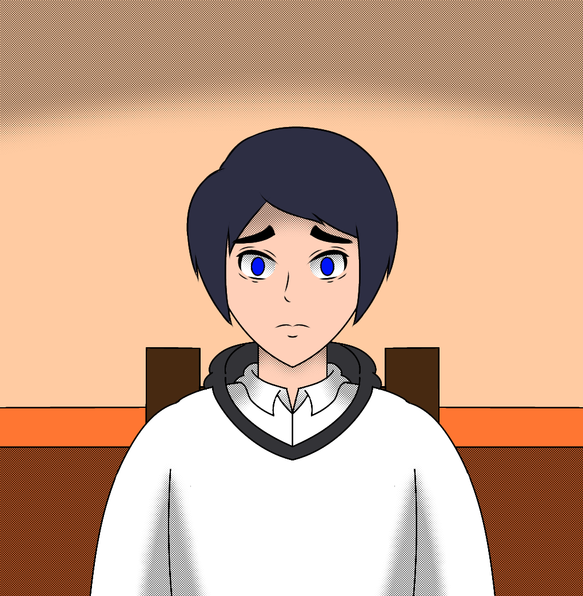

Social Anxiety Disorder
Motion Graphic บอกเล่าปัจจัย อาการ ที่ทำให้คนคนหนึ่งกลัวการเข้าสังคม
"การกลัวสังคมไม่ใช่เรื่องแปลกประหลาด
แต่คืออาการที่ต้องได้รับการเยียวยา"
Work
Characters
บูท

บูท - ดูภายนอกเหมือนเด็กธรรมดา แต่จริงๆ เป็นคนที่กลัวสังคมอย่างมาก
ผู้บรรยายคุง
ผู้บรรยายคุง - ทำหน้าที่บรรยายเรื่องโรคกลัวสังคมของบูทให้คนดูเข้าใจง่ายขึ้น